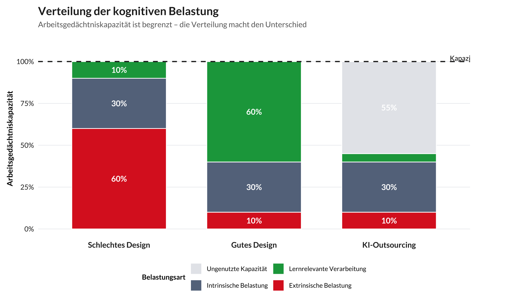

Arbeitsgedächtnis und Instruktion
Warum der Flaschenhals des Lernens so viele Lehrdesign-Entscheidungen prägt
![]()
HinweisLesehinweise
Geschätzte Lesezeit: 15–20 Minuten
Diese Seite vertieft den Abschnitt zur kognitiven Architektur aus dem Workshop. Empfohlene Reihenfolge:
- Essentiell: Was ist das Arbeitsgedächtnis? + Das Problem neuer Inhalte + Cognitive Load Theory
- Vertiefung: Die vier Modelle, die die Workshop-Inhalte mit wissenschaftlicher Tiefe ergänzen
- Optional: Slots vs. Ressourcen, also die aktuelle Debatte in der Forschung
Die Seite enthält Abrufübungen. Nutze diese, denn aktives Erinnern ist wirksamer als Weiterlesen.
Zentrale Erkenntnisse
- Arbeitsgedächtnis ist der Flaschenhals, durch den alles Lernen hindurch muss: ca. 4 Elemente, 15–30 Sekunden ohne Auffrischung
- Vorwissen verändert den Flaschenhals: Schemata komprimieren Elemente; die effektive Kapazität variiert mit der Expertise
- Pausen sind keine verlorene Zeit: Schon kurze Mikropausen ermöglichen die Auffrischung zerfallender Gedächtnisspuren
- Das eigentliche Limit ist Bindung: Nicht nur Elemente halten, sondern deren Beziehungen zueinander verarbeiten, das ist die anspruchsvollste Operation
- Neue Inhalte belasten fundamental anders: Ohne Schemata fehlen alle Mechanismen, die das Arbeitsgedächtnis normalerweise entlasten
- Cognitive Load Theory übersetzt die Forschung in Lehrdesign: Extrinsische Last eliminieren, um Raum für die produktive Verarbeitung der intrinsischen Komplexität zu schaffen
Was ist das Arbeitsgedächtnis?
Das Arbeitsgedächtnis ist nicht dasselbe wie das Kurzzeitgedächtnis. Kurzzeitgedächtnis meint passives Speichern, also eine Telefonnummer für ein paar Sekunden behalten. Das Arbeitsgedächtnis fügt eine aktive Verarbeitungskomponente hinzu: Es ist der mentale Arbeitsplatz, auf dem man Informationen hält und gleichzeitig etwas damit tut, also vergleichen, schlussfolgern, integrieren und lösen.
Eine nützliche Analogie: Stell dir das Arbeitsgedächtnis als kleinen Schreibtisch vor. Man kann nur wenige Dokumente gleichzeitig geöffnet haben. Werden es zu viele, fallen Dinge vom Rand. Das Langzeitgedächtnis ist der Aktenschrank mit riesiger Kapazität, aber man muss Dokumente erst zum Schreibtisch holen, bevor man damit arbeiten kann.
Zentrale Eigenschaften
| Eigenschaft | Details |
|---|---|
| Kapazität | Ca. 4 ± 1 Elemente (Chunks) für einfache, unverbundene Elemente; die effektive Kapazität variiert mit Materialart und Expertise |
| Dauer | Zerfällt innerhalb von 15–30 Sekunden ohne aktive Aufrechterhaltung |
| Verarbeitung | Typischerweise wird nur ein Element aktiv bearbeitet, während einige weitere in einem Bereitschaftszustand gehalten werden |
| Aufrechterhaltung | Erfordert ständigen kognitiven Aufwand |
Das Arbeitsgedächtnis ist der Flaschenhals, durch den alles Lernen hindurch muss.
ReflectSelbsttest: Arbeitsgedächtnis
Ohne zurückzuschauen: Erkläre in eigenen Worten:
- Was ist der Unterschied zwischen Kurzzeitgedächtnis und Arbeitsgedächtnis?
- Warum ist die Zahl “4 ± 1” eine Vereinfachung?
Wenn du dich unsicher fühlst, ist das ein gutes Zeichen. Es bedeutet, dass dein Gehirn gerade aktiv rekonstruiert statt nur wiederzuerkennen.
Modelle des Arbeitsgedächtnisses
Forschende haben verschiedene Modelle vorgeschlagen, die unterschiedliche Aspekte des Systems erfassen und unterschiedliche Implikationen für die Lehre haben.
TippBaddeleys Mehrkomponenten-Modell (2000)
Das bekannteste Modell beschreibt das Arbeitsgedächtnis als System mit getrennten Subsystemen, die von einer zentralen Exekutive gesteuert werden:
- Zentrale Exekutive: Aufmerksamkeitskontrolle und Koordination
- Phonologische Schleife: Verarbeitung verbaler und akustischer Information
- Visuell-räumlicher Notizblock: Verarbeitung visueller und räumlicher Information
- Episodischer Puffer: Integration von Information und Verbindung zum Langzeitgedächtnis
Die Subsysteme werden von der zentralen Exekutive gesteuert, sind aber eigenständige Komponenten, die nicht “in” der Exekutive enthalten sind.
Lehrimplikation: Du hast zwei Eingangskanäle, einen verbalen und einen visuellen. Beide gleichzeitig nutzen (z.B. Diagramm mit gesprochener Erklärung) reduziert die gegenseitige Interferenz und unterstützt eine effektivere Verarbeitung. Aber: Zwei verbale Ströme (Folientext lesen und gleichzeitig denselben Inhalt hören) konkurrieren um denselben Kanal und erzeugen Redundanz, keine Erweiterung. Lies nie deine Folien vor.
TippCowans Modell der eingebetteten Prozesse (Cowan 2010)
Nelson Cowan schlug eine sparsamere Sicht vor: Arbeitsgedächtnis ist kein separates System. Es besteht aus aktivierten Teilen des Langzeitgedächtnisses, wobei eine kleine Teilmenge im Aufmerksamkeitsfokus gehalten wird (~4 Elemente).
Die Schlüsselidee: Die Grenze zwischen Arbeits- und Langzeitgedächtnis ist fliessend. Wenn Studierende relevantes Vorwissen haben, kann dieses schnell aktiviert werden und die aktuelle Verarbeitung unterstützen. Vorwissen verändert die effektive Kapazität des Arbeitsgedächtnisses.
Lehrimplikation: Das ist der Grund, warum Vorwissensdiagnostik so wichtig ist. Dieselbe Vorlesung, dasselbe Material, und dennoch eine fundamental unterschiedliche kognitive Aufgabe, je nachdem, was Studierende bereits wissen. Ein Experte verarbeitet “F = ma” als einen Chunk in einem Arbeitsgedächtnis-Slot. Ein Anfänger verarbeitet es als drei unverbundene Elemente, die 3+ Slots beanspruchen, ohne Schema, das die Bindungen stabilisiert.
ReflectVerbindung zur Praxis
Denke an ein Konzept aus deinem Fach, das Studierende regelmässig als “schwer” beschreiben:
- Wie viele Elemente muss ein Anfänger gleichzeitig im Arbeitsgedächtnis halten?
- Wie viele “Slots” benötigt ein Experte für dasselbe Konzept?
- Was sagt dieser Unterschied über deine Instruktionsstrategie?
TippTBRS-Modell: Zeitbasierte Ressourcenteilung (Barrouillet und Camos 2015)
Das TBRS-Modell bietet eine fundamental andere Erklärung für die Grenzen des Arbeitsgedächtnisses. Statt einer festen Anzahl von “Slots” schlägt es vor:
- Das Modell behandelt Aufmerksamkeit als eine einzelne Ressource, die zwischen Verarbeitung (kognitive Arbeit) und Aufrechterhaltung (Elemente am Leben halten) geteilt werden muss
- Gedächtnisspuren zerfallen über die Zeit und müssen aktiv aufgefrischt werden
- Das Gehirn wechselt schnell zwischen Verarbeitung und Auffrischung, wie ein Jongleur, der mehrere Bälle in der Luft hält
- Kognitive Last = der Anteil der Zeit, den die Verarbeitung beansprucht, sodass nichts für die Auffrischung übrig bleibt
Was passiert bei unterschiedlicher Last:
- Niedrige Last: Pausen zwischen Verarbeitungsschritten ermöglichen das Auffrischen, und die Elemente überleben
- Hohe Last: Ununterbrochene Verarbeitung lässt keine Zeit zum Auffrischen, und die Elemente zerfallen und gehen verloren
Lehrimplikation: Das Tempo ist entscheidend. Selbst kurze Mikropausen zwischen Instruktionssegmenten geben dem Gehirn der Studierenden Zeit, zerfallende Gedächtnisspuren aufzufrischen. Schnelle, ununterbrochene Vermittlung ist schädlicher als dieselbe Menge Inhalt mit Atempausen. Dies ist ein mechanistisch plausibles Argument für die Segmentierung von Vorlesungen und den Einbau kurzer Reflexionspausen, unterstützt durch die allgemeine Forschung zu segmentierter Instruktion (Mayers Segmentierungsprinzip) und konsistent mit dem TBRS-Mechanismus, obwohl die spezifische TBRS-zu-Hörsaal-Kausalkette nicht direkt getestet wurde.
Pro-tip30-Sekunden-Regel
Baue nach jedem Schlüsselkonzept eine 30–60-Sekunden-Pause ein:
- “Notiere in einem Satz, was du gerade verstanden hast”
- “Wende dich an deinen Nachbarn und erkläre das Konzept”
- Oder einfach: Schweigen. Das Gehirn arbeitet weiter.
Diese Pausen sind keine verlorene Lehrzeit, sondern Lehrzeit für das Arbeitsgedächtnis.
TippOberauers konzentrisches Modell (2002)
Klaus Oberauer erweiterte Cowans Modell zu drei konzentrischen Ebenen:
- Aktiviertes Langzeitgedächtnis: Breites, relevantes Hintergrundwissen
- Region des direkten Zugriffs: ~4 Elemente, die für die Verarbeitung verfügbar sind
- Aufmerksamkeitsfokus: 1 Element, das gerade bearbeitet wird
Oberauers besondere Einsicht: Die eigentliche Engstelle ist nicht die Speicherung, sondern die Bindung. Es geht nicht nur darum, vier Elemente zu halten; es geht darum, zu behalten, welches Element zu welchem gehört, was auf was folgt und wie die Dinge zusammenhängen.
Lehrimplikation: Verstehen ist fundamental eine Frage der relationalen Struktur. Wenn du ein Konzept unterrichtest, müssen Studierende nicht nur die einzelnen Elemente halten, sondern auch die Bindungen zwischen ihnen aufrechterhalten. Deshalb ist Material mit hoher Elementinteraktivität (bei dem viele Elemente gleichzeitig in Beziehung zueinander verstanden werden müssen) so anspruchsvoll.
TippSlots vs. Ressourcen: Eine aktuelle Debatte
Speichert das Arbeitsgedächtnis eine feste Anzahl von Elementen bei voller Genauigkeit (Slots) oder verteilt es eine kontinuierliche Ressource über Elemente (Ressourcen)? Neuere Evidenz favorisiert Hybridmodelle, die Elemente beider Ansätze kombinieren (vgl. Oberauer 2002), aber die Debatte hat praktische Implikationen:
- Slot-Modell: Jedes gespeicherte Element hat volle Präzision; überschüssige Elemente fallen einfach weg
- Ressourcen-Modell: Mehr Elemente = weniger Präzision für jedes einzelne; weniger Elemente = höhere Präzision
Lehrimplikation: Eine Überladung des Arbeitsgedächtnisses führt möglicherweise nicht dazu, dass Elemente einfach verschwinden. Stattdessen werden alle Repräsentationen verrauschter und weniger präzise. Das entspricht der Erfahrung mit Studierenden, die “so ungefähr” mehrere Dinge verstehen, aber keines davon sicher beherrschen. Manchmal ist es besser, weniger Dinge gründlich zu lehren als viele Dinge oberflächlich.
ReflectSelbsttest: Modelle vergleichen
Ohne zurückzuschauen, ordne zu:
- Welches Modell erklärt, warum Pausen so wichtig sind?
- Welches Modell erklärt, warum Vorwissen die effektive Kapazität verändert?
- Welches Modell erklärt, warum “in Beziehung setzen” schwieriger ist als “merken”?
- Welches Modell erklärt, warum zwei Eingangskanäle besser sind als einer?
Vergleiche anschliessend mit dem Text. Wo lagst du richtig? Wo musst du nochmals lesen?
Das Problem neuer Inhalte
Hier wird es für die Lehre entscheidend. Alle Mechanismen, die das Arbeitsgedächtnis effektiver machen (Chunking, Schema-Aktivierung, Langzeit-Arbeitsgedächtnis) sind Produkte früheren Lernens. Wenn Inhalte für Studierende wirklich neu sind, steht keiner dieser Mechanismen zur Verfügung.
Das Bootstrapping-Problem
Für den Experten ist “F = ma” ein einziger, reichhaltiger Chunk im Langzeitgedächtnis, verknüpft mit Konzepten, Beispielen und Intuitionen. Verwendet ~1 Arbeitsgedächtnis-Slot. Hohe Präzision. Leicht aufzufrischen.
Für den Anfänger sind “F”, “m” und “a” drei separate Elemente ohne Verbindung. Wie hängen sie zusammen? Was bedeutet “=” hier? Es werden 3+ Arbeitsgedächtnis-Slots verwendet. Niedrige Präzision. Schwer aufrechtzuerhalten.
Bei neuen Inhalten:
- Chunking kann nicht helfen, weil es keine vorhandenen Schemata zum Komprimieren gibt
- Aktiviertes LTM hat nichts Relevantes zur Unterstützung der aktuellen Verarbeitung
- Auffrischung ist weniger effektiv, weil keine LTM-Anker die Spuren stabilisieren
- Jede Bindung ist willkürlich, und die relationale Struktur muss durch rohe Anstrengung aufrechterhalten werden
- Präzisionsanforderungen sind höher, weil degradierte Repräsentationen nicht aus Hintergrundwissen rekonstruiert werden können
Die Modelle legen nahe, dass der initiale Erwerb qualitativ unterschiedlichen kognitiven Einschränkungen unterliegen könnte als die spätere Verfeinerung, also nicht nur langsamer, sondern fundamental anders.
Der Expertise Reversal Effect
Instruktionshilfen, die Anfängern helfen (z.B. durchgearbeitete Beispiele), können Experten sogar schaden:
- Für Anfänger reduzieren durchgearbeitete Beispiele die extrinsische Last, indem sie vororganisierte relationale Struktur liefern
- Für Experten ist dieselbe Strukturierung redundant, weil sie sie zwingt, Information zu verarbeiten, die sie bereits geChunkt haben
Lehrimplikation: Biete Scaffolding als optionales Material an, nicht als Pflicht, damit fortgeschrittene Studierende nicht gezwungen werden, redundante Struktur zu verarbeiten.

Expertise Reversal Effekt nach Kalyuga (2009): Worked Examples (hohe Anleitung) führen bei Anfängern zu besseren Lernergebnissen, weil sie die extrinsische kognitive Last senken. Mit zunehmender Expertise kehrt sich der Effekt um: Dieselbe Anleitung wird redundant und belastet das Arbeitsgedächtnis zusätzlich. Am Kreuzungspunkt überholt eigenständiges Problemlösen die angeleitete Instruktion. Ab diesem Punkt sollten Worked Examples schrittweise durch offenere Aufgabenformate ersetzt werden (Fading).
Cognitive Load Theory: Vom Labor ins Klassenzimmer
Die Cognitive Load Theory [CLT; Sweller, Ayres, und Kalyuga (2011)], entwickelt von John Sweller, übersetzt die Arbeitsgedächtnisforschung in Prinzipien für das Instruktionsdesign.
Drei Arten kognitiver Belastung
| Art | Beschreibung | Ziel |
|---|---|---|
| Intrinsisch | Inhärente Komplexität des Materials (Elementinteraktivität) | Angemessen dosieren, und zwar durch Sequenzierung und Vorwissensaufbau |
| Extrinsisch | Verursacht durch schlechtes Instruktionsdesign | Minimieren |
| Germane Processing* | Produktive Verarbeitung: Schemabildung, Integration, Elaboration | Raum dafür schaffen |
* In der aktuellen CLT wurde “germane load” als germane processing rekonzeptualisiert, nicht als separater Belastungstyp, sondern als der produktive Anteil der intrinsischen Verarbeitung, der der Schemakonstruktion gewidmet ist (Sweller 2023).
Vier behebbare Quellen extrinsischer Last
| Problem | Was passiert | Lösung |
|---|---|---|
| Split Attention | Diagramm hier, Erklärung dort: Studierende integrieren mental | Labels ins Diagramm. Verbal erklären, während man zeigt. |
| Redundanz | Text auf Folie wird vorgelesen, und zwei verbale Ströme konkurrieren | Visuals auf Folien. Verbal erklären. Nie Folien vorlesen. |
| Seductive Details | Interessante, aber irrelevante Anekdote, die Aufmerksamkeit bindet ohne Lernfortschritt | Streichen. Engagement ≠ Lernen. |
| Transiente Information | Lange gesprochene Erklärung, bei der frühere Schritte vergessen werden | Persistente visuelle Referenz bereitstellen. |
Das Designprinzip: Extrinsische Last eliminieren → Arbeitsgedächtniskapazität freisetzen → damit sie für die produktive Verarbeitung (germane processing) der intrinsisch komplexen Inhalte zur Verfügung steht.

ReflectAnwendung auf die eigene Lehre
Denke an deine letzte Vorlesung oder Lehrveranstaltung:
- Wo gab es Split Attention, also mussten Studierende zwischen verschiedenen Quellen hin- und herspringen?
- Wo gab es Redundanz, hast du Folientext vorgelesen?
- Gab es Seductive Details, also interessante, aber irrelevante Einschübe?
- Gab es transiente Information, also lange gesprochene Erklärungen ohne visuelle Unterstützung?
Identifiziere eine konkrete Änderung, die du beim nächsten Mal umsetzen würdest.
Praktische Prinzipien für die Lehre
1. Komplexe Inhalte segmentieren
Inhalte mit hoher Elementinteraktivität in handhabbare Teile zerlegen. Komponenten zunächst isoliert vermitteln, dann integrieren.
2. Dual Coding nutzen
Informationen über beide Kanäle gleichzeitig präsentieren, also Diagramm mit gesprochener Erklärung. Nicht den Folientext vorlesen.
3. Extrinsische Last eliminieren
Informationsquellen integrieren, Redundanz entfernen, Seductive Details streichen.
4. Pausen einbauen
Auch 30–60-Sekunden-Mikropausen ermöglichen die Auffrischung von Gedächtnisspuren (TBRS). Nicht in einem ununterbrochenen Strom vermitteln.
5. Neue Inhalte stark stützen, dann ausblenden
Maximale externe Struktur für neue Inhalte (durchgearbeitete Beispiele, Prozessanleitungen). Mit wachsender Expertise schrittweise reduzieren.
6. Elementinteraktivität explizit managen
Nicht nur “langsamer” machen, sondern aktiv die Anzahl der Elemente reduzieren, die gleichzeitig verarbeitet werden müssen.
7. Instruktion an das Expertise-Niveau anpassen
Was Anfängern hilft, kann Experten schaden (Expertise Reversal Effect). Scaffolding als optionales Material anbieten, nicht als Pflicht.
TippVerbindung zum Workshop
Die Prinzipien auf dieser Seite bilden die kognitive Grundlage für:
- Die 5 Leitfragen (→ Teil 2): Leitfrage 4 prüft, ob die kognitive Arbeit bei den Studierenden bleibt
- Die Offloading-vs.-Outsourcing-Unterscheidung (→ Teil 2): Offloading reduziert extrinsische Last; Outsourcing eliminiert germane processing
- Die Peer-Diagnose (→ Teil 3): Die Advocatus-Diaboli-Phase fordert die eigene Analyse heraus und vertieft das Verständnis
Das Arbeitsgedächtnis erklärt, warum die Gestaltungsprinzipien funktionieren.
Literatur
Baddeley, A. 2000. „The Episodic Buffer: A New Component of Working Memory?“ Trends in Cognitive Sciences 4 (11): 417–23. https://doi.org/10.1016/s1364-6613(00)01538-2.
Barrouillet, Pierre, und Valérie Camos. 2015. Working Memory: Loss and Reconstruction. Working Memory: Loss and Reconstruction. New York, NY, US: Psychology Press.
Cowan, Nelson. 2010. „The Magical Mystery Four: How Is Working Memory Capacity Limited, and Why?“ Current Directions in Psychological Science 19 (1): 51–57. https://doi.org/10.1177/0963721409359277.
Kalyuga, Slava. 2009. „The Expertise Reversal Effect“. In Managing Cognitive Load in Adaptive Multimedia Learning, 58–80. IGI Global Scientific Publishing. https://doi.org/10.4018/978-1-60566-048-6.ch003.
Oberauer, Klaus. 2002. „Access to Information in Working Memory: Exploring the Focus of Attention“. Journal of Experimental Psychology: Learning, Memory, and Cognition 28 (3): 411–21. https://doi.org/10.1037/0278-7393.28.3.411.
Sweller, John. 2023. „The Development of Cognitive Load Theory: Replication Crises and Incorporation of Other Theories Can Lead to Theory Expansion“. Educational Psychology Review 35 (4): 95. https://doi.org/10.1007/s10648-023-09817-2.
Sweller, John, Paul Ayres, und Slava Kalyuga. 2011. Cognitive Load Theory. New York, NY: Springer. https://doi.org/10.1007/978-1-4419-8126-4.
Wiederverwendung
Zitat
Mit BibTeX zitieren:
@online{ellis,
author = {Ellis, Andrew},
title = {Arbeitsgedächtnis und Instruktion},
url = {https://virtuelleakademie.github.io/ki-lehre-intermediate/01-lernen-verstehen/arbeitsgedaechtnis/},
langid = {de}
}
Bitte zitieren Sie diese Arbeit als:
Ellis, Andrew. n.d. “Arbeitsgedächtnis und Instruktion.” https://virtuelleakademie.github.io/ki-lehre-intermediate/01-lernen-verstehen/arbeitsgedaechtnis/.